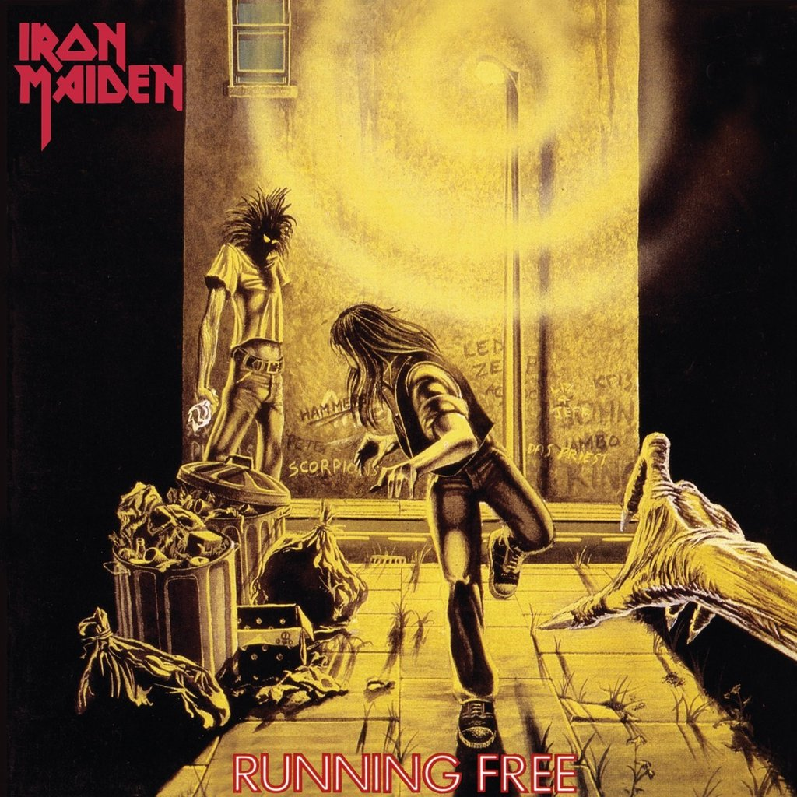
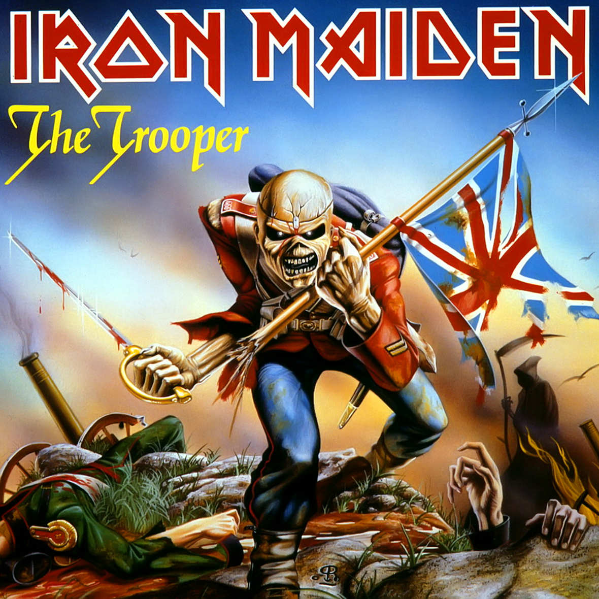
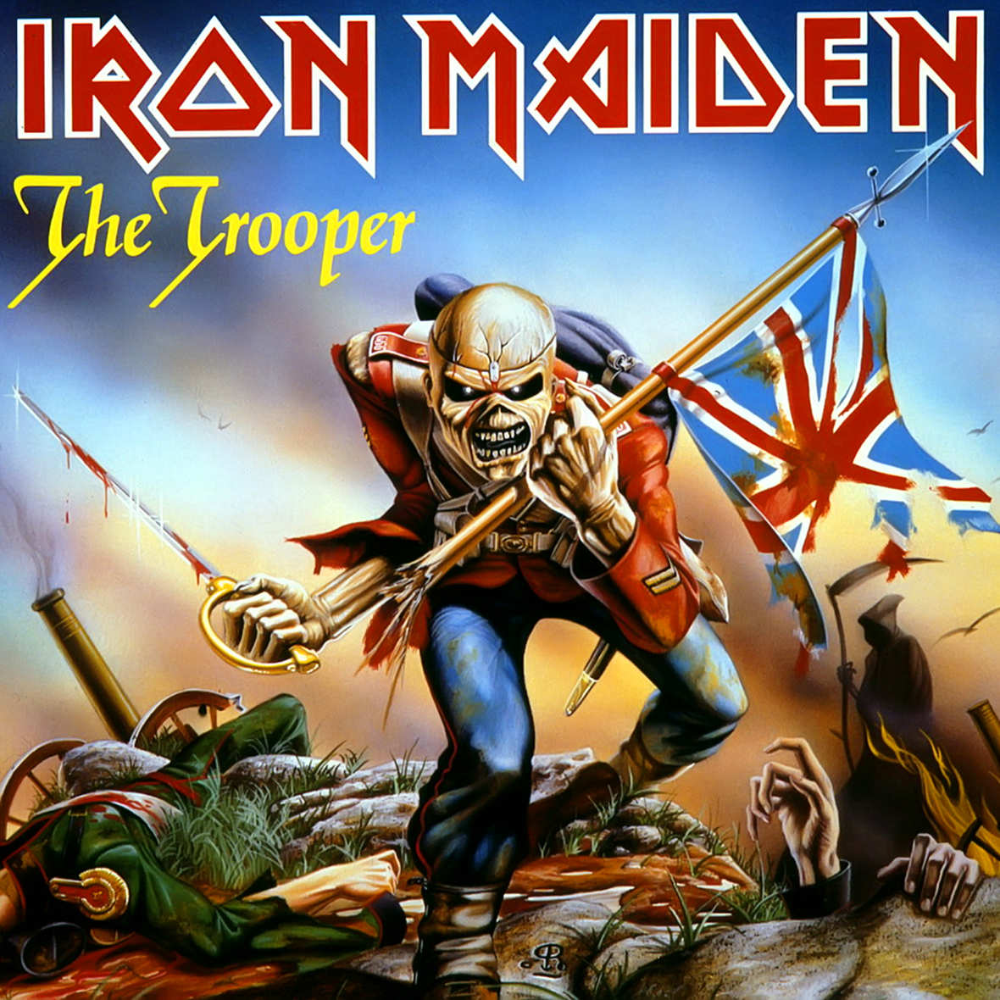
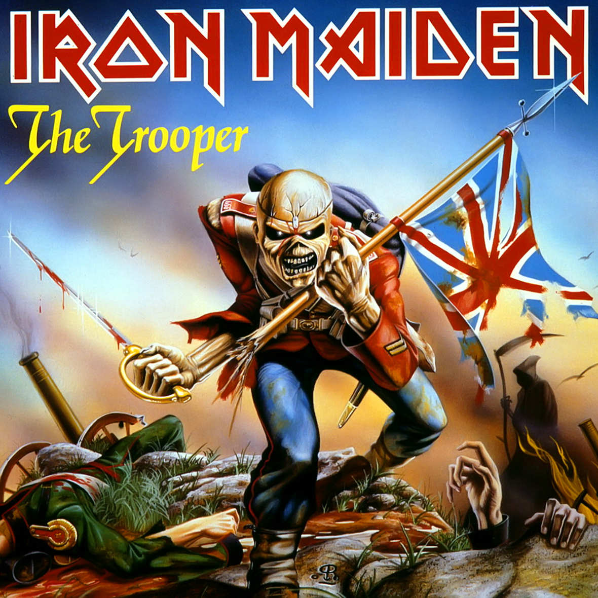

Page 3
Eddie, the Head
Histórias de algumas encarnações do
Eddie
-Clique para ver a história de cada
Eddie
dos álbuns de estúdio do Iron Maiden
-Running Free

-Women in Uniform
-The Trooper

Voltar
 -The Trooper

-The Trooper
